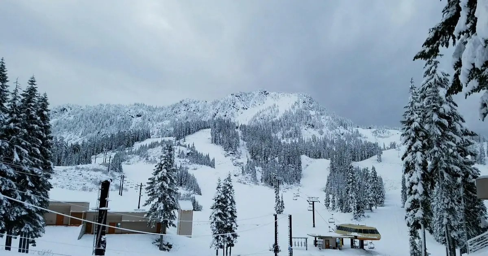
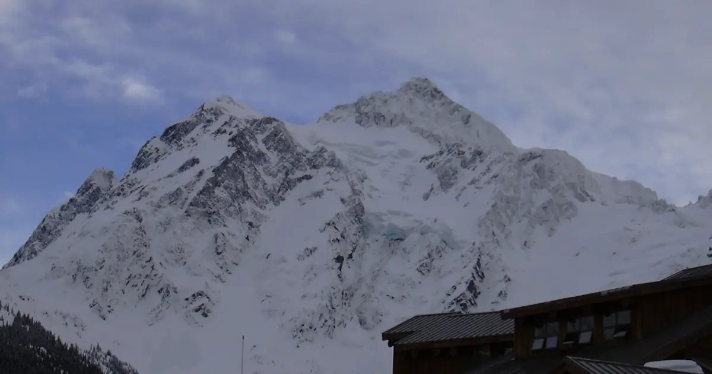

Il primo giorno a Park City Mountain: dal primo impianto all'ultima pista
Park City Mountain è così grande che il primo giorno può perdersi tra code e svolte sbagliate. Ecco un piano semplice per quella giornata, più quello che il nostro storico neve di 46 inverni passati (un modello, non i bollettini della località) dice su dove e quando la neve è migliore.
Le previsioni neve in tempo reale per Park City Mountain Resort nell'app SnowScopeAltezza neve, allerte powder e mappa 3D, gratis.
Prima di partire: le dimensioni
Park City è la più grande località servita da impianti degli Stati Uniti, circa 6.700 acri e 41 impianti, da quando nel 2015 è stata unita a Canyons dalla Quicksilver Gondola. La vetta è a 10.026 ft (3.056 m) e la base a 6.900 ft (2.100 m), un dislivello di 3.100 feet (945 m). La località si trova circa 32 miglia (51 km) a est di Salt Lake City, quindi molti atterrano e salgono lo stesso giorno.
Non provare a sciare tutto. Scegli un versante per la mattina e decidi a pranzo se passare all'altro.
Mattina: prima in alto, riscaldamento in quota
Prendi i primi impianti diretti alla parte alta, dove la neve è più spessa e più fredda. Il nostro modello indica un picco abituale di circa 111 in (281 cm) vicino alla vetta, intorno a 9.977 ft (3.041 m), contro circa 71 in (180 cm) a metà montagna, intorno a 8.435 ft (2.571 m), e solo circa 42 in (106 cm) vicino alla base. Scaldati su una lunga pista blu battuta lassù, mentre i pendii bassi sono ancora duri per la notte.
Tarda mattinata: segui il sole
Quando il sole sale, i pendii esposti a est e sud si ammorbidiscono per primi; le piste a nord conservano più a lungo la neve fredda e asciutta. Gli intermedi possono collegare diversi catini e creste senza scendere a valle. Se sei venuto per terreni più ripidi, è il momento di provarli, quando conosci la neve.
Pranzo e pomeriggio
Mangia presto o tardi per evitare la ressa di mezzogiorno. Dopo pranzo, se hai energie, attraversa la montagna con la Quicksilver Gondola ed esplora l'altro versante; altrimenti resta sulle piste che conosci. Programma l'ultima discesa per finire vicino all'auto o al bus: su una montagna grande il ritorno a piedi può essere lungo.
Quando organizzare il viaggio
Nel nostro modello l'altezza abituale a metà montagna è di circa 8 in (21 cm) a novembre, 26 in (67 cm) a dicembre, 44 in (112 cm) a gennaio, 55 in (140 cm) a febbraio e 61 in (155 cm) a marzo, il mese più nevoso, poi 48 in (121 cm) ad aprile. Vicino alla vetta marzo e aprile mantengono circa 91 in (230 cm) e 88 in (224 cm). In 9 inverni su 10 la metà montagna ha avuto almeno 20 in (50 cm) per 15 settimane della stagione.
La tendenza è in calo. Tra i primi 15 e gli ultimi 15 inverni della serie, il picco abituale a metà montagna è sceso da circa 75 in (190 cm) a circa 62 in (158 cm), e vicino alla vetta da circa 120 in (304 cm) a circa 101 in (257 cm). L'inverno scorso, 2025-26, è stato il più magro dei 46 a metà montagna, con un picco di solo circa 31 in (79 cm). Per il fondo più sicuro vieni a febbraio o a marzo.
Dove dormire e sicurezza
Il centro storico di Park City e i villaggi alla base hanno letti per ogni budget, e la cittadina è abbastanza vicina a Salt Lake City da poter dormire lì e salire in auto. Oltre i confini della località non c'è servizio piste e il terreno da valanghe è vicino: leggi il bollettino quotidiano dello Utah Avalanche Center e porta ARTVA, sonda e pala.
Consigli per sciatori
- Scia la parte alta per prima: nel nostro modello ha circa il doppio della neve della base.
- Scegli un versante per mattina invece di andare avanti e indietro.
- Prenota febbraio o marzo per il fondo più affidabile.
- Esci dai confini? Leggi prima il bollettino dello Utah Avalanche Center.
Riferimenti e crediti
- Wikipedia, 'Park City Mountain Resort' (retrieved 7 November 2026): elevations, vertical, skiable area, lifts, the Quicksilver Gondola link with Canyons, distance from Salt Lake City. en.wikipedia.org/wiki/Park_City_Mountain_Resort
- Utah Avalanche Center, official avalanche forecasts for the Salt Lake and Park City mountains. utahavalanchecenter.org/
Su questi numeri
Numeri della neve: storico neve SnowScope, 46 inverni passati (1980-81 - 2025-26) a tre quote della località, un modello del passato corretto per la quota (una stima per un'area, non i bollettini della località). Impianti, piste e accesso: le fonti qui sotto, verificate alla data indicata.
Bollettini valanghe ufficiali: Utah Avalanche Center
Cita questo articolo
Per ricerca, didattica o stampa: numeri e grafici sono liberamente riutilizzabili con licenza CC BY 4.0 citando così.
SnowScope (2026), Il primo giorno a Park City Mountain: dal primo impianto all'ultima pista, https://snowscope.app/blog/it/2026/11/park-city-mountain-first-day-plan.html, consultato il 2026-11-09
SnowScope (Atlas Labs). (2026, November 9). Il primo giorno a Park City Mountain: dal primo impianto all'ultima pista. SnowScope snow reports. https://snowscope.app/blog/it/2026/11/park-city-mountain-first-day-plan.html
BibTeX
@misc{snowscope2026parkcitymountainfirstday,
author = {{SnowScope (Atlas Labs)}},
title = {Il primo giorno a Park City Mountain: dal primo impianto all'ultima pista},
year = {2026},
month = nov,
howpublished = {\url{https://snowscope.app/blog/it/2026/11/park-city-mountain-first-day-plan.html}},
note = {Published 2026-11-09 21:44 UTC; accessed 2026-11-09}
}· CC BY 4.0 · Metodi, dati e strumenti →
Park City Mountain Resort: neve e temperatura per quota, quest'inverno vs lo scorso (strumenti) →
Altri bollettini neve

La neve più abbondante nell'Ovest degli USA è a Kendall Mountain: circa 48 in (122 cm) sui pendii superiori, secondo il nostro modello neve. Poi …

Fino al 7 novembre la nostra previsione indica 17 in (44 cm) a Mt Baker, 6 in (14 cm) a Crystal Mountain e 6 in (14 cm) a Stevens Pass. I valori …

Mt Baker ha ricevuto 11 in (27 cm) di neve fresca nelle ultime 72 ore, di cui 4 in (11 cm) nelle ultime 24 ore. Ora ha circa 19 in (47 cm) sui pendii …